-
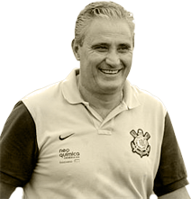
Tite
Posição: Técnico Camisa: 0 Nascimento: 25/05/1961 Altura: 1,84m -
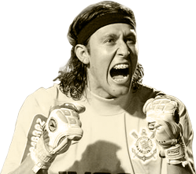
Cássio
Posição: Goleiro Camisa: 12 Nascimento: 06/06/1987 Altura: 1,95m -
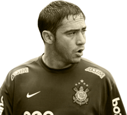
Chicão
Posição: Zagueiro Camisa: 3 Nascimento: 03/06/1981 Altura: 1,80m -

Paulo André
Posição: Zagueiro Camisa: 13 Nascimento: 20/08/1983 Altura: 1,89m -
Wallace
Posição: Zagueiro Camisa: 4 Nascimento: 26/12/1987 Altura: 1,84m -
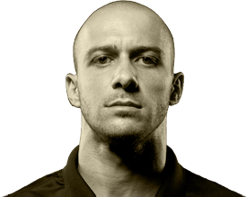
Alessandro
Posição: Lateral Camisa: 2 Nascimento: 10/01/1979 Altura: 1,77m -
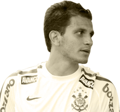
Fábio Santos
Posição: Lateral Camisa: 6 Nascimento: 16/09/1985 Altura: 1,79m -
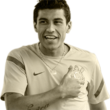
Paulinho
Posição: Volante Camisa: 8 Nascimento: 25/07/1988 Altura: 1,80m -
Ralf
Posição: Volante Camisa: 5 Nascimento: 09/06/1984 Altura: 1,80m -
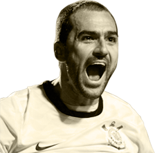
Danilo
Posição: Meia Camisa: 20 Nascimento: 11/06/1979 Altura: 1,86m -

Douglas
Posição: Meia Camisa: 10 Nascimento: 18/02/1982 Altura: 1,75m -
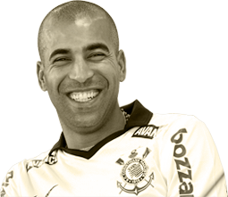
Emerson
Posição: Atacante Camisa: 11 Nascimento: 06/09/1978 Altura: 1,71m -
Jorge Henrique
Posição: Atacante Camisa: 23 Nascimento: 23/04/1982 Altura: 1,69m -
Romarinho
Posição: Atacante Camisa: 31 Nascimento: 12/12/1990 Altura: 1,74m
Últimos Jogos
-
3 x 0
30/09/12 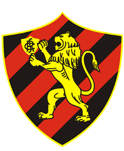 -
1 x 2
06/10/12 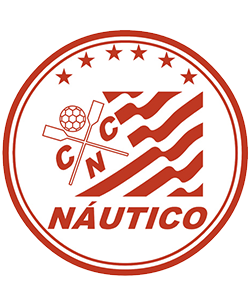 -
3 x 2
10/10/12 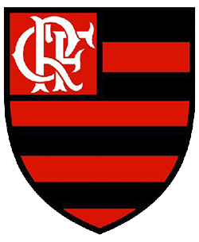 -
1 x 1
13/10/12 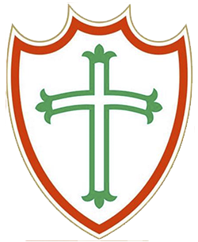 -
0 x 2
17/10/12 -
1 x 1
20/10/12 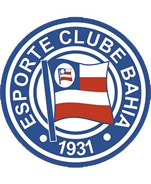
Clique aqui e participe do QUIZ